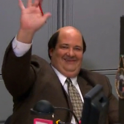

| Home | The Seasons | The Characters | The Reviews |

The Office |
Kevin Jaye Malone is a character in the United States television series The Office. He is played by Brian Baumgartner. Kevin's counterpart in the UK series is Keith Bishop.Kevin is one of the few minor characters in The Office to be directly based on a character from the British original version. He is based on Keith Bishop, who shares Kevin's lack of communication skills (Keith became particularly popular after an episode where boss David Brent conducts a staff appraisal, to which Keith stoically fails to respond to questions). Kevin shares Keith's musical interest (as a musician, not a disc jockey as with Keith), although, in contrast to Keith, Kevin demonstrates a childish sense of humor. Additionally, both characters are overweight.
Slate magazine named the character as one of the reasons they were looking forward to the return of the show in fall 2007.[1]